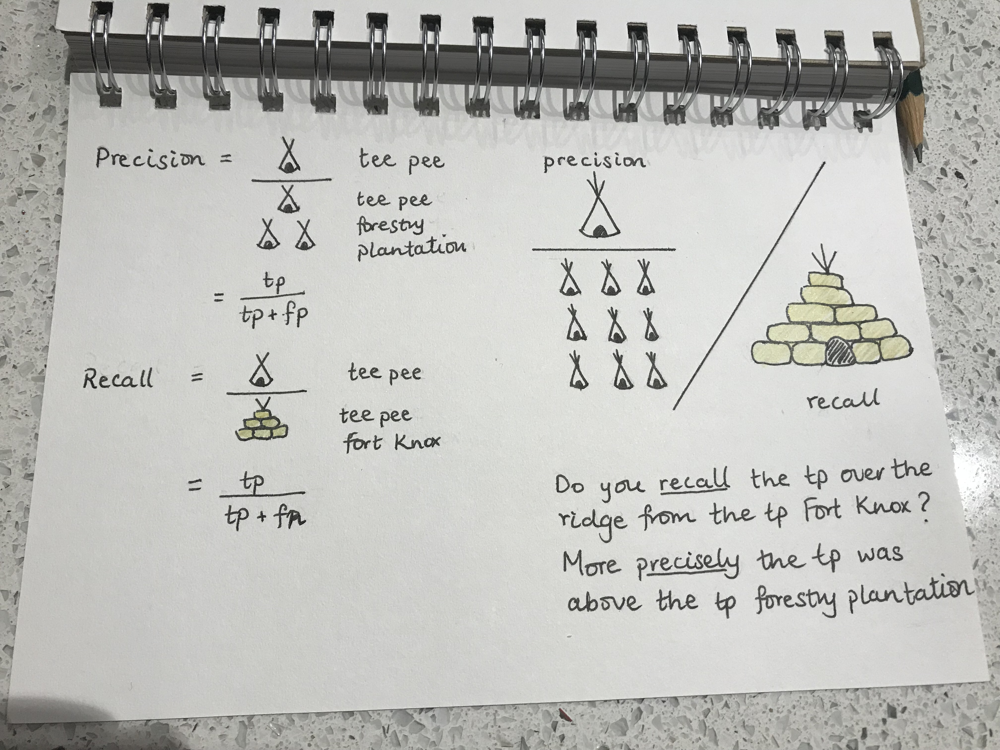

Memory Craft¶
I have recently read Memory Craft by Australian academic Lynne Kelly. She shares traditional memorisation techniques and their modern applications. This is an enjoyable and enlightening read which highlights just how lazy we have become especially with the development of the internet and the reliance on search engines.
Although the internet is an amazing tool, Kelly argues that memorising information allows our brain to draw together different pieces of information which leads to creativity. The underlying basis for all of the techniques in the book is structured association and periodic revision. We’ve all learnt the alphabet song and mnemonics but this provides a myriad of other techniques applicable to different types of information.
Naturally I thought I’d try applying some of the memorisation techniques to data science. Yes google is always at our finger tips but wouldn’t it be nice not to have to? Especially for those really fundamental things that you’ve looked a million times but just can’t seem to remember. Plus it would help credibility to yourself as much as others.
As a maths student I have memorised countless equations and proofs but they have mostly long dissolved into the ether. As a student, my preferred technique was having condensed hand written notes and then writing out the formulae repeatedly until I got them right. This was fine for short term memorisation but no good in the long run. I didn’t like fancy notes with decorations although this is actually recommended by Kelly. Maybe if I had continued periodic revisions, I might have had a snifter’s chance of remembering but these notes have long since been packed away. Plus it was hardly the most enjoyable process and perhaps not the most efficient. I have never liked using flash cards since I found the set up of to be a waste of time and this thankfully was not suggested in the book. I think in the long-term this would have a similar effectiveness to my note taking.
For equations, Kelly suggests making stories by giving the letters a character whose name starts with that letter. Then have the characters interact to make a story. She also has a system for memorising the times tables which I won’t detail here - you’ll have to buy the book!
Talking with a data scientist friend I discovered that my inability to remember the recall and precision formulae was not unheard of in the data science community, phew! So I decided to start with these two. I haven’t followed the suggestion of using characters and a story but I have associated the letters with images and then related them in a paragraph. Much like the sailors’ sentence: “There’s no more red port left.”. I’ve associated true positive or tp with tee pee. False positive is associated with forestry plantation, in this case a forestry plantation of tee pees which gives me tp + fp. False negative is associated with Fort Knox which is an image of a tee pee made of gold bullion which gives tp + fn. See my images below.
{kind=link}
To make sure this really sticks, I’ll have to periodically revise. One thing Kelly reiterated in her book was the need to develop your own associations and images since these would resonate best with you. What’s more, the time spent on developing and illustrating the images helps cement them. She also mentioned that shocking and salacious stories would be more easily recalled.
I think the biggest challenge using the memorisation techniques will be to be lighten up and have a little fun with studying which I typically take so seriously. Perhaps the downside is the initial investment in setting up the memorisation which may seem daunting. I’m not sure how realistic this will be if you have to memorise a lot of equations. However, this undoubtedly gets easier with practice. Also, it’s easy enough to run through a story when you are on a bus or standing in a queue. Kelly shares many different techniques and ideas which I will continue to play with and no doubt adapt.
Edit: I have been able to remember these formulae 1 month later at work without having revised inbetween. Interestingly, I don’t have to recall the whole picture and story and can pretty much go straight to the formulae. However, I can recall the original picture and story in order to check that I’ve got it right.